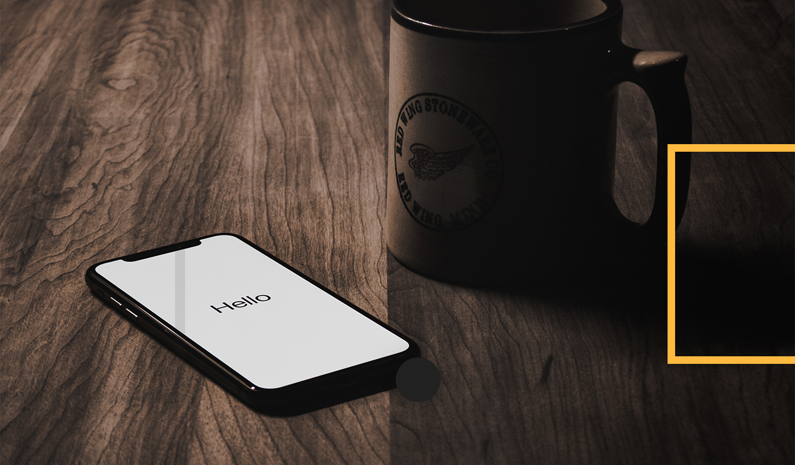

关于
你好!我是Alex，一个完全陷入困境的开发者，一个Ruby爱好者，一个对代码质量有点痴迷的家伙。我也是pykod.com的联合创始人。我现在可以做自由职业。如果你有一个项目，你想开始或认为你需要我的帮助，然后联系。
技能
你好!我是Alex，一个完全陷入困境的开发者，一个Ruby爱好者，一个对代码质量有点痴迷的家伙。我也是pykod.com的联合创始人。我现在可以做自由职业。如果你有一个项目，你想开始或认为你需要我的帮助，然后联系。
作品
你好!我是Alex，一个完全陷入困境的开发者，一个Ruby爱好者，一个对代码质量有点痴迷的家伙。我也是pykod.com的联合创始人。我现在可以做自由职业。如果你有一个项目，你想开始或认为你需要我的帮助，然后联系。
经历
你好!我是Alex，一个完全陷入困境的开发者，一个Ruby爱好者，一个对代码质量有点痴迷的家伙。我也是pykod.com的联合创始人。我现在可以做自由职业。如果你有一个项目，你想开始或认为你需要我的帮助，然后联系。